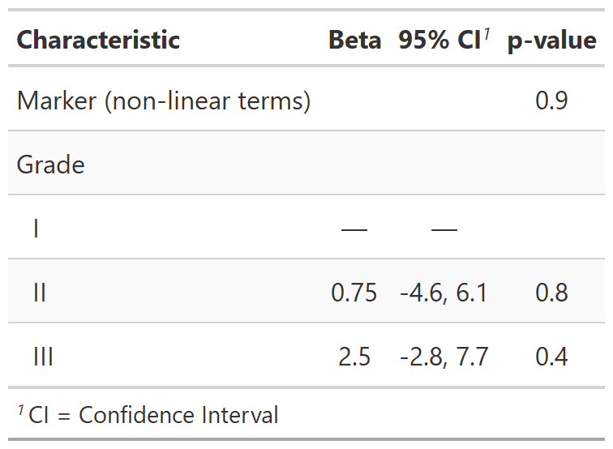
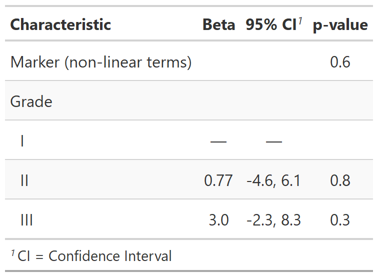
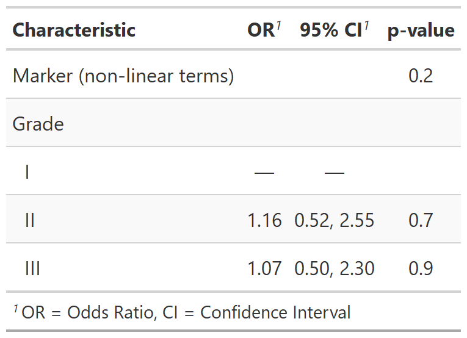

| combine_terms {gtsummary} | R Documentation |
The function combines terms from a regression model, and replaces the terms
with a single row in the output table. The p-value is calculated using
stats::anova().
combine_terms(x, formula_update, label = NULL, ...)
x |
a |
formula_update |
formula update passed to the stats::update.
This updated formula is used to construct a reduced model, and is
subsequently passed to |
label |
Option string argument labeling the combined rows |
... |
Additional arguments passed to stats::anova |
tbl_regression object
Example 1

Example 2

Example 3

Daniel D. Sjoberg
Other tbl_regression tools:
add_global_p.tbl_regression(),
add_nevent.tbl_regression(),
bold_italicize_labels_levels,
bold_p.tbl_regression(),
bold_p.tbl_stack(),
inline_text.tbl_regression(),
modify_header(),
sort_p.tbl_regression(),
tbl_merge(),
tbl_regression(),
tbl_stack()
# fit model with nonlinear terms for marker
nlmod1 <- lm(
age ~ marker + I(marker^2) + grade,
trial[c("age", "marker", "grade")] %>% na.omit() # keep complete cases only!
)
combine_terms_ex1 <-
tbl_regression(nlmod1, label = grade ~ "Grade") %>%
# collapse non-linear terms to a single row in output using anova
combine_terms(
formula_update = . ~ . - marker - I(marker^2),
label = "Marker (non-linear terms)"
)
# Example with Cubic Splines
library(Hmisc)
mod2 <- lm(
age ~ rcspline.eval(marker, inclx = TRUE) + grade,
trial[c("age", "marker", "grade")] %>% na.omit() # keep complete cases only!
)
combine_terms_ex2 <-
tbl_regression(mod2, label = grade ~ "Grade") %>%
combine_terms(
formula_update = . ~ . -rcspline.eval(marker, inclx = TRUE),
label = "Marker (non-linear terms)"
)
# Logistic Regression Example, LRT p-value
combine_terms_ex3 <-
glm(
response ~ marker + I(marker^2) + grade,
trial[c("response", "marker", "grade")] %>% na.omit(), # keep complete cases only!
family = binomial
) %>%
tbl_regression(label = grade ~ "Grade", exponentiate = TRUE) %>%
# collapse non-linear terms to a single row in output using anova
combine_terms(
formula_update = . ~ . - marker - I(marker^2),
label = "Marker (non-linear terms)",
test = "LRT"
)